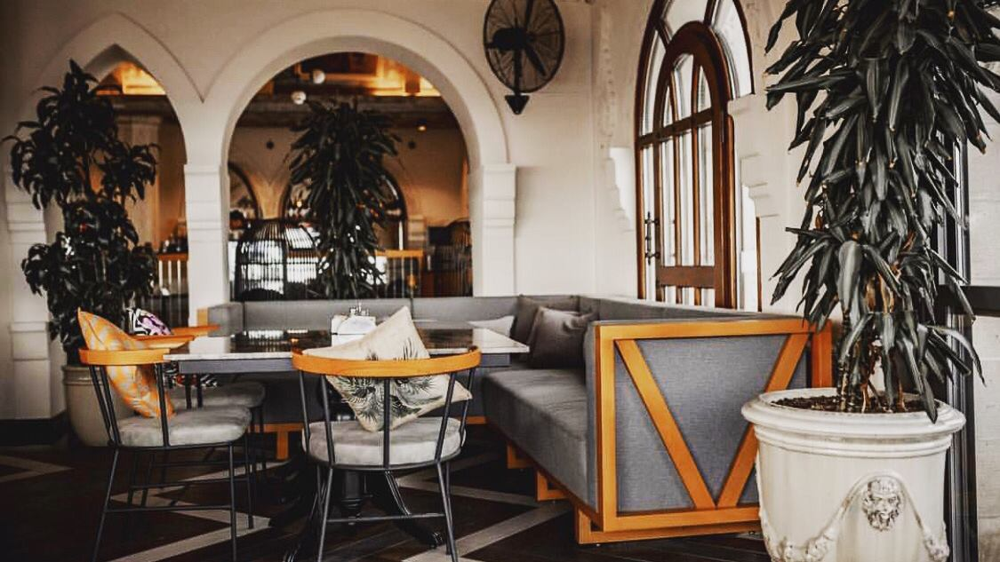

İlk tabaklar
Atom · Haydari · Yoğurtlu semizotu
Avcılar, Ambarlı
Ortaya mezeler, ardından ızgaralar.
Mazrona’da akşamın keyfi, aynı masada bir araya gelmekte.

Akşamın kendi ritminde
Bir kutlama, dostlarla yemek ya da iki kişilik sakin bir akşam. Bitkiler, kemerli pencereler ve sıcak ışıklar arasında sohbete zaman ayırın.
Ziyaret için bilgi alın ↗Masadan kalan izlenimler
“Mekan şık ve özenli, ilgi-alaka yerinde, mezeler ve yemekler lezzetli.”Ali Kamer ObanYorumu Google’da okuyun ↗
“Çok güzel bir yer Avcılar’da olduğuna inanmak güç.”VURAL DEMİRYorumu Google’da okuyun ↗
“Masamıza gelen tüm yiyecekler çok lezzetliydi, servisi hızlı ve özenliydi.”İnci Deniz KantarcıYorumu Google’da okuyun ↗
Google yorumlarından kısa alıntılar. Puan ve yorum sayısı 2 Kasım 2026 tarihinde kontrol edilmiştir.
Güncel çalışma saatleri ve masa durumu için telefonla bize ulaşabilirsiniz.